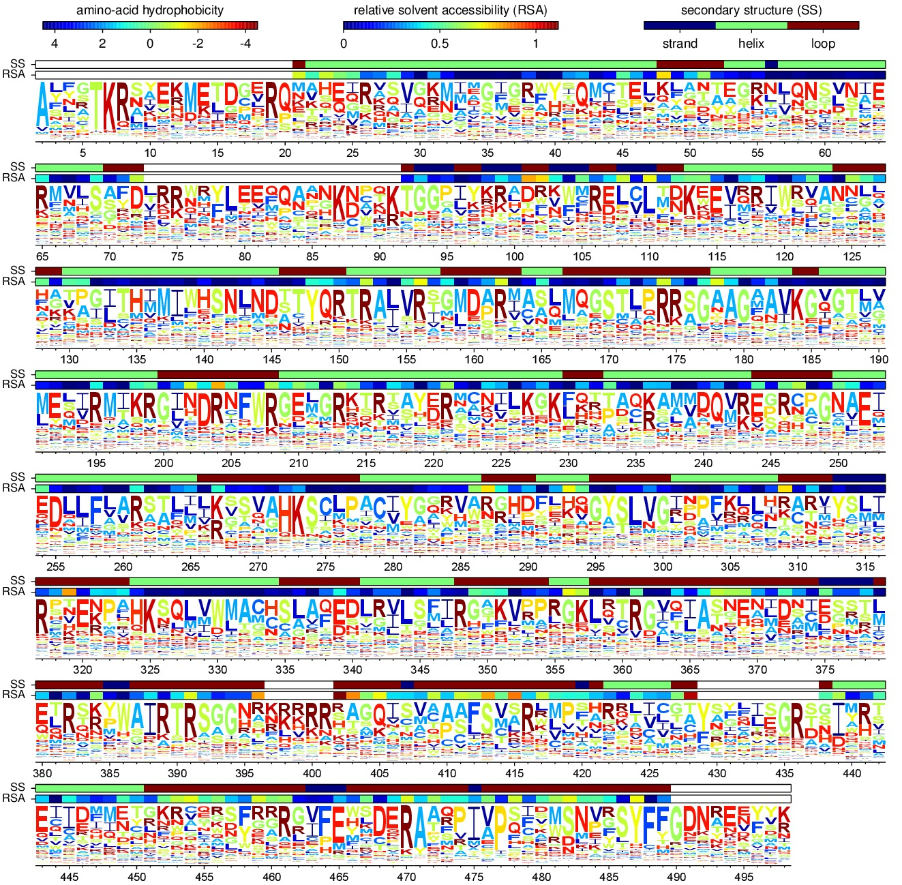

2013 analysis of Influenza NP (Aichi/1968)¶
Contents
Overview¶
This is a description of the analysis of mutagenesis and deep-sequencing of the nucleoprotein (NP) from the human H3N2 influenza strain A/Aichi/2/1968. The ultimate goal is to infer the preference of each site for each possible amino acid.
This is the analysis described at Bloom 2014.
The overall conceptual approach of the experiments is similar to the strategy originally described by Fowler et al.
The sequencing and analysis was performed by Jesse Bloom using the mapmuts package. The sequencing was performed in 2013, and the analysis extended from 2013 to 2014.
This analysis can be replicated if you install the appropriate software (see Software used) by downloading the mapmuts repository on GitHub and going to the directory ./examples/2013Analysis_Influenza_NP_Aichi68/ in the main mapmuts package directory. This will contain all of the necessary input files (see Input files) with the exception of the very large Illumina FASTQ files, which are available at SRA accession SRP036064. Once all of this is set up, you can replicate the analysis with the simple command:
python run_mapmuts.py
The complete analysis performed by this script generates a large amount of output – to much to easily store in the ./examples/2013Analysis_Influenza_NP_Aichi68 subdirectory of the main mapmuts repository on GitHub. Therefore, only the key output files described below are retained in the repository. However, the entire analysis with all output files can be re-generated on your computer using the run_mapmuts.py script as described below.
Outline of experiment¶
The basic idea of the experiment is to create plasmid mutant libraries of influenza nucleoprotein, rescue pools of mutant viruses by reverse genetics, and then passage the viruses twice at moderately low multiplicity of infection (MOI) in tissue culture. The viral cDNA is deep sequencing at each step using overlapping paired-end 50-nt Illumina reads. Some controls are also included.
Overall, each sample contains seven amplicons, which are illustrated graphically below:
The amplicons are as follows:
- DNA : Measures error-rate on sequencing unmutated plasmid DNA.
- mutDNA : Measures mutation rate in plasmid mutant library.
- RNA : Measures error-rate on sequencing reverse-transcribed RNA.
- virus-p1 : Unmutated virus passaged once.
- virus-p2 : Unmutated virus passaged twice.
- mutvirus-p1 : Mutant virus passaged once.
- mutvirus-p2: Mutant virus passaged twice.
There are four independent samples that each contain these seven amplicons. Each of these samples is grown from an independently created plasmid mutant library. Each sample is sequencing on its own Illumina lane, with the seven amplicons multi-plexed on the lane. The samples are:
- WT-1 : Mutant library built from wildtype Aichi/1968 NP.
- WT-2 : Another mutant library built from wildtype Aichi/1968 NP.
- N334H-1 : Mutant library built from the N334H mutant of the Aichi/1968 NP. N334H is a stabilizing mutation to this NP as described by Gong et al.
- N334H-2 : Another mutant library built from the N334H mutant of the Aichi/1968 NP.
Finally, two experimental replicates are performed for the set of four samples. Each of these replicates involves total replication of the viral growth and passaging and the sequencing. The two replicates are:
- replicate_A
- replicate_B
Software used¶
This analysis was performed using the following software on the Fred Hutchinson computer cluster using the following Linux distribution:
Linux version 3.5.0-43-generic (buildd@roseapple) (gcc version 4.6.3 (Ubuntu/Linaro 4.6.3-1ubuntu5) ) #66~precise1-Ubuntu SMP Thu Oct 24 14:52:23 UTC 2013
In order to replicate the analysis, you will also need to use Linux or Mac OS X, and install the following software.
The specific software versions used for the analysis are specified. You can probably also use other software versions in many cases, but this has not been confirmed.
- mapmuts version 1.0
- Python version 2.7.3
- numpy version 1.6.1
- matplotlib version 1.3.1
- pymc version 2.3
- scipy version 0.9.0
- pyPdf version 1.13
- pdflatex version 3.1415926-1.40.10-2.2
- weblogo version 3.3
- ImageMagick convert 6.6.9-7 2012-08-17
- sbatch (version 2.6.2) was used by the run_mapmuts.py script to submit the jobs on a computer cluster.
Input files¶
Here is a listing of the input data / files that are necessary to repeat the analysis if all of the appropriate software is installed. These are the names assigned to the files within the ./examples/2013Analysis_Influenza_NP_Aichi68 subdirectory of the main mapmuts package.
run_mapmuts.py is a Python script that will perform the entire analysis assuming that you have all of the specified software (see Software used) and input files (see Input files) installed. To run this script, simply type:
python run_mapmuts.py
at the command line. Note that the script has an option to use sbatch to submit the jobs in parallel on a computing cluster. This option was used during the analysis described here. If you don’t want to use sbatch, modify the use_sbatch option hard-coded within the run_mapmuts.py script.
./FASTQ_files/ is a subdirectory that contains the Illumina FASTQ files. Please note that this subdirectory is not distributed with the mapmuts package on GitHub because of the very large size of these files. Instead, you can download the FASTQ files from SRA accession SRP036064.
The download from SRA accession SRP036064 will give you the *.sra files. In order to process these with the run_mapmuts.py script provided here, you will need to convert the reads into *.fastq files and place in a directory called ./FASTQ_files/. Within this directory, there should be a different subdirectory for each replicate (i.e. ./FASTQ_files/replicate_A/). Each sample and amplicon should then have its own subdirectory with names such as ./FASTQ_files/replicate_A/Sample_WT-1_DNA/. Within these subdirectories, there should be gzipped *.fastq files for the read 1 and read 2, specified by R1 and R2 somewhere in the file name. For example, for replicate_A, WT-1, DNA there should be files matching the following:
./FASTQ_files/replicate_A/Sample_WT-1_DNA/*R1*.fastq.gz ./FASTQ_files/replicate_A/Sample_WT-1_DNA/*R2*.fastq.gz
The FASTQ files themselves were generated by processing and de-multiplexing the Illumina reads with the CASAVA pipeline (version 1.8.2).
R1_trim3.fasta and R2_trim3.fasta specify the adaptor sequences that are found at the 3’ end after the insert of R1 or R2 reads, respectively. These files are needed to delineate the sequence that we expect to find at the 3’ ends of any 50-nt reads of inserts that are less than 50 nt, since for such inserts the read will extend into the adaptor.
Aichi68-NP_amplicon.fasta and Aichi68-NP-N334H_amplicon.fasta are FASTA files that give the sequences of the full PCR amplicons which are fragmented for sequencing. These include the gene sequence of interest plus the extra sequence added by PCR primers during amplification of the gene. There are two files, one giving the sequence for the wildtype and one for the N334H mutant of the NP from A/Aichi/2/1968 (H3N2) influenza.
Sanger_codontypes.txt and Sanger_codonnmuts.txt are text files that give the estimated frequencies of different types of mutations for the mutDNA libraries based on Sanger sequencing of some clones. Sanger_codontypes.txt lists the estimated per-codon frequencies of synonymous, nonsynonymous, and stop codon mutations. Sanger_codonnmuts.txt lists the estimated per-codon frequencies of one-, two-, and three-nucleotide codon mutations.
./DSSP_analysis/ is a subdirectory that contains the results of analyzing the solvent accessibilities and secondary structures of NP from the crystal structure. Briefly, the NP crystal structure in PDB 2IQH was downloaded, and the 2IQH.pdb file was manually edited to extract only monomer C into 2IQH_monomerC.pdb. This monomer was then analyzed with the DSSP webserver to create the results stored in 2IQH_monomerC.dssp.
Analysis steps and results¶
You can run the entire analysis with the following command:
python run_analysis.py
The individual steps and results are as follows:
Making alignments¶
The mapmuts script mapmuts_makealignments.py is used to align the overlapping paired-end reads to the template gene.
Each analysis is run in a subdirectory that conforms to replicate/sample/amplicon/, such as replicate_A/WT-1/DNA/.
The master run_analysis.py script creates an input file, makealignments_infile.txt, that specifies the specific criteria that are used to make the alignments. These criteria determine what read pairs are considered to successfully overlap and align, and which are discarded. The lines specifying the alignment criteria in these makealignments_infile.txt files are as follows (the meanings are detailed in the mapmuts documentation for mapmuts_makealignments.py):
applyfilter True
minq 25
maxn 2
minoverlap 30
maxa1m 1
maxa2m 1
maxrm 1
maxgenem 6
Within each subdirectory are the files created by mapmuts_makealignments.py. Here are the ones that will be of greatest interest. All of these files-of-greatest-interest are part of the repository on GitHub except as specifically noted below:
The *_alignments.txt.gz file gives the alignments of the reads to the template gene. This file is not included in the repository on GitHub due to its large size.
The *_unaligned.fasta.gz file contains reads that could not be aligned with the specified criteria. This file is not included in the repository on GitHub due to its large size.
The *_makealignments_log.txt file records the progress of the mapmuts script mapmuts_makealignments.py.
The *_alignmentstatistics.pdf file shows how many reads could be overlapped and aligned to the template gene. In general, a high fraction of reads could be overlappend and aligned to the template. An example is below:
The *_insertlengths.pdf file shows the lengths of the inserts that could be overlapped and aligned to the template gene. The target insert length is 50 nucleotides – in most cases the distribution was reasonably distributed around that target. An example is below:
The mapmuts script mapmuts_alignmentsummaryplot.py is then used to summarize how many reads could be overlapped and aligned for all amplicons and samples for each replicate. The plots have the name alignmentsummaryplot.pdf and are in the subdirectory for each replicate (so for example replicate_A/alignmentsummaryplot.pdf).
Below are the summary plots. This plot shows a large number of overlapped and aligned reads for all amplicons. The reason that the bars aren’t all exactly equal height for all amplicons within a sample is that the barcoded DNA was not pooled exactly evenly owing to imperfect quantification.

Parsing mutations¶
The mapmuts script mapmuts_parsecounts.py is used to parse the counts of mutations out of the alignments created in the previous step.
Each analysis is run in a subdirectory that conforms to replicate/sample/amplicon/, such as replicate_A/WT-1/DNA/ – these subdirectories already contain the alignment results.
The master run_analysis.py script creates an input file, parsecounts_infile.txt that serves as input to mapmuts_parsecounts.py. Within each subdirectory are the files created by mapmuts_parsecounts.py. Here are the ones that will be of greatest interest:
- The *_codoncounts.txt gives the counts for all of the different codons identified at each site, in the format described in the mapmuts documentation.
- The *_parsecounts_log.txt file logs the progress of mapmuts_parsecounts.py.
- The *_codondepth.pdf file plots the read depth for each codon. Below are example plots for a DNA and mutDNA amplicon. From these examples, you can see that the read depth was fairly good across the gene with one notable dip at a consistent location (presumably due to poor fragmentation of the amplicon at this location).

The replicate_A/WT-1/mutDNA/replicate_A_WT-1_mutDNA_codondepth.pdf plot.
The mapmuts script mapmuts_parsesummaryplots.py is then used to summarize the mutations for all amplicons and samples for each replicate. The output here is in the subdirectory for each replicate, and consists of the following three files:
- The parsesummary_codontypes.txt gives the overall fraction of mutations to each type of mutation (synonymous, nonsynonymous, stop codon) for each amplicon and sample.
- The parsesummary_codonnmuts.txt gives the overall fraction of mutations with one-, two-, and three-nucleotide changes for each amplicon and sample.
- The parsesummary_codon_types_and_nmuts.pdf plot gives a graphical summary of the frequencies of different types of mutations.
These last plots are the key summary figures. They are shown below:
Key points from these plots:
- The sequencing error rate (DNA) is low.
- The reverse-transcription error rate (RNA) is not much worse.
- Very few de-novo mutations arise during virus growth (mutvirus-p1 and mutvirus-p2).
- The plasmid mutant library has a good frequency of mutations (mutDNA).
- Viral growth selects against many of the stop codons and nonsynonymous mutations (mutvirus-p1 versus mutDNA).
- There is very little change in the frequency of mutations between one and two virus passages (mutvirus-p1 versus mutvirus-p2).
- The error frequency in the mutDNA is similar to that obtained by some Sanger sequencing when the additional sequencing error rate manifested in the DNA sample is accounted for.
Checking mutation sampling completeness¶
An analysis was performed to see how completely the possible mutations were sampled for each replicate (looking at the net sampling over the pooled samples for each replicate). To do this, the mapmuts script mapmuts_countparsedmuts.py was used.
Each analysis was done in the subdirectory for that replicate (i.e. ./replicate_A/) and created the following files of interest:
The countparsedmuts_multi-nt-allcodonmutcounts.txt file gives the fraction of all mutations that involve multiple nucleotide changes to the same codon that are found \(\ge n\) times for n ranging from 0 to 50. The reason that this fraction is of interest is that multiple nucleotide change codon mutations arise only very rarely due to sequencing or reverse-transcription errors – so occurrence of these mutations will tend to be due to the desired codon mutagenesis process. Here are the first few lines of this file for replicate_A (this is the ./replicate_A/countparsedmuts_multi-nt-allcodonmutcounts.txt file):
# File listing the fraction of multi-nt-all mutations that are found greater than or equal to n times. # There are 26892 total multi-nt-all mutations #n DNA RNA mutDNA mutvirus-p1 mutvirus-p2 virus-p1 virus-p2 0 1.0000 1.0000 1.0000 1.0000 1.0000 1.0000 1.0000 1 0.1936 0.2220 0.9981 0.8801 0.8510 0.2259 0.3395 2 0.0750 0.0950 0.9972 0.7986 0.7448 0.0926 0.1451 3 0.0468 0.0627 0.9964 0.7317 0.6689 0.0590 0.0862 4 0.0340 0.0489 0.9955 0.6772 0.6082 0.0451 0.0624 5 0.0272 0.0396 0.9948 0.6302 0.5591 0.0357 0.0483 6 0.0223 0.0333 0.9939 0.5891 0.5173 0.0297 0.0391 7 0.0193 0.0294 0.9927 0.5540 0.4836 0.0255 0.0329 8 0.0161 0.0259 0.9922 0.5244 0.4544 0.0217 0.0287 9 0.0141 0.0231 0.9911 0.4980 0.4299 0.0195 0.0248 10 0.0124 0.0206 0.9901 0.4734 0.4087 0.0173 0.0219These results indicates that multi-nucleotide mutations are essentially never found more than a few times in the DNA and RNA amplicons – indicating that these mutations only rarely appear due to sequencing or reverse-transcription errors. However, nearly all (99%) multi-nucleotide mutations are found at least 10 times in the mutDNA amplicons, indicating that the codon mutagenesis is nearly comprehensive. Many of the multi-nucleotide mutations are found frequently in the mutvirus-p1 amplicons – but much less completely than for the mutDNA amplicon, as only 47% of mutations are present at least 10 times. This could have two explanations:
- The viruses grown from the mutant plasmid library only partially sample that library due to experimental limitations, or...
- Many of the multi-nucleotide mutations are deleterious and are purged by selection from the mutant viruses.
To attempt to distinguish between these explanations, see the next files...
The countparsedmuts_multi-nt-syncodonmutcounts.txt file gives the fraction of synonymous multi-nucleotide change mutations that are found \(\ge n\) times for n ranging from 0 to 50. We would expect that synonymous mutations will usually not be highly deleterious, and so will usually not be purged by selection during viral growth. (Note however that this is not completely true for influenza, as some synonymous mutations to the virus can be extremely deleterious; see for example J Virol, 82, 2295 and Nat Biotech, 28, 723). Here are the first few lines of this file for replicate_A (this is the ./replicate_A/countparsedmuts_multi-nt-syncodonmutcounts.txt file):
# File listing the fraction of multi-nt-syn mutations that are found greater than or equal to n times. # There are 289 total multi-nt-syn mutations #n DNA RNA mutDNA mutvirus-p1 mutvirus-p2 virus-p1 virus-p2 0 1.0000 1.0000 1.0000 1.0000 1.0000 1.0000 1.0000 1 0.2180 0.2353 0.9965 0.9446 0.9239 0.2076 0.2872 2 0.0865 0.0900 0.9965 0.9031 0.8962 0.0865 0.1003 3 0.0450 0.0415 0.9931 0.8789 0.8754 0.0588 0.0623 4 0.0173 0.0346 0.9896 0.8581 0.8478 0.0277 0.0415 5 0.0104 0.0173 0.9862 0.8443 0.8131 0.0242 0.0381 6 0.0069 0.0069 0.9827 0.8235 0.7785 0.0242 0.0277 7 0.0035 0.0069 0.9792 0.8062 0.7543 0.0242 0.0173 8 0.0035 0.0035 0.9792 0.7993 0.7474 0.0138 0.0173 9 0.0000 0.0035 0.9758 0.7855 0.7336 0.0138 0.0104 10 0.0000 0.0000 0.9758 0.7682 0.7266 0.0138 0.0069The countparsedmuts_multi-nt-codonmutcounts.pdf file plots the results in the two aforementioned files:

The replicate_A/countparsedmuts_multi-nt-codonmutcounts.jpg plot.
We see that the multi-nucleotide synonymous mutations are again sampled very thoroughly in the mutDNA amplicons (98% are found at least 10 times). Now the mutations are also sampled much more thoroughly in the mutvirus-p1 amplicons as well, with 77% appearing at least 10 times. This compares to only 47% appearing at least 10 times for all (including nonsynonymous) multi-nucleotide mutations. So the sampling is fairly good here. Why is it not closer to 100% of the mutvirus-p1 amplicons? It could be that experimental limitations mean that some of the mutations never make it into the viruses. However, because some synonymous mutations are known to be highly deleterious (see the J Virol, 82, 2295 and Nat Biotech, 28, 723 references mentioned above), it could simply be a sign that these mutations are under selection. Overall, we interpret the fact that nearly 80% of the synonymous mutations are found at least 10 times in the mutvirus-p1 amplicons to be a good sign, and to indicate that most mutations were sampled in the mutant viruses.
Inference of amino-acid preferences¶
We next use the results of the deep-sequencing analysis to infer the preference of each site for each amino acid. The MCMC algorithm for inference of the preferences is described in detail in the mapmuts documentation describing the mapmuts_inferpreferences.py script.
Briefly, we use the DNA amplicons to estimate the sequencing error rate that afflicts the mutDNA amplicons, and the RNA amplicons to estimate the sequence / reverse-transcription error rate that afflicts the mutvirus-p1 amplicons. We then infer the preferences based on changes in frequency going from the mutDNA to the mutvirus-p1 (which involves selection for viral growth).
We infer the preferences separately for each replicate, averaging over all of the samples for the replicate. We then compare the inferred preferences among the replicates, and summarize the results graphically.
Specifically, the steps are as follows:
Infer the preferences separately for each sample within each replicate using mapmuts_inferpreferences.py. The preferences are inferred using both the passage 1 (p1) and passage 2 (p2) mutant viruses, and these inferences are done within the subdirectory for each sample (such as ./replicate_A/WT-1/). The input files that specify the parameters used by mapmuts_inferpreferences.py are in files with names p1_inferpreferences_infile.txt and p2_inferpreferences_infile.txt within each sample subdirectory. The key settings for the priors and MCMC are as follows (the exact meanings are detailed in the mapmuts documentation for mapmuts_inferpreferences.py):
nsteps 200000 nruns 3 thin 200 convergence 0.01 stepincrease 4 mu_concentration 1.0 pi_concentration 1.0 rho_concentration 1.0 epsilon_concentration 1.0 minvalue 1e-7 removeoutlier False
The following files are created within each sample subdirectory. Such files are created both for the p1 viruses with names indicated below, and also comparable files for the p2 viruses:
- p1_inferpreferences_log.txt logs the MCMC progress.
- p1_equilibriumpreferences.txt is a text file giving the posterior mean inferred preferences.
- p1_equilibriumpreferences_credibleintervals_95.txt is a text file giving 95% credible intervals for the inferred preferences.
Compute the overall equilibrium preferences inferred for each replicate by averaging the inferred preferences for the samples in that replicate with mapmuts_preferencemeans.py. This inference is done within every replicate subdirectory (such as ./replicate_A/ to create the file summarizing the preferences for that replicate. The following files are created:
- ./replicate_A/replicate_A_p1_equilibriumpreferences.txt : The preferences inferred for replicate_A using the p1 (passaged once) viruses.
- ./replicate_A/replicate_A_p2_equilibriumpreferences.txt
- ./replicate_B/replicate_B_p1_equilibriumpreferences.txt
- ./replicate_B/replicate_B_p2_equilibriumpreferences.txt
Compute the overall equilibrium preferences across both replicates for the WT samples and the N334H samples with mapmuts_preferencemeans.py. This creates the following files:
- ./WT_p1_equilibriumpreferences.txt gives the preferences inferred from the passage 1 (p1) averaged across the WT-1 and WT-2 samples from both replicates.
- ./N334H_p1_equilibriumpreferences.txt
Compute the overall equilibrium preferences averaged over the two independent replicates (replicate_A and replicate_B) with mapmuts_preferencemeans.py. This is the “best” estimate for these preferences as it combines the data for the two replicates. The results are in the main subdirectory for this example in the following files:
- ./p1_equilibriumpreferences.txt gives the preferences inferred from the first passage (p1).
- ./p2_equilibriumpreferences.txt gives the preferences inferred from the second passage (p2).
Compute the correlations between the inferred preferences. These allow us to compare the inferred preferences across replicates, and between the passage 1 (p1) and passage 2 (p2) viruses within each replicate. These correlations were computed using the mapmuts_preferencescorrelate.py described in the mapmuts documentation). The results are in the form of PDF plots that are created in the ./correlations/ subdirectory. The key plots are shown below. Overall these plots show that the two passages p1 and p2 are highly correlated with each other. The two independent replicates (replicate_A and replicate_B) are correlated, but less so – presumably this is due to stochasticity in growth of the viruses from these replicates. The WT and N334H samples are about as correlated as the two replicates.

{kind=link}
{kind=link}
{kind=link}
{kind=link}
{kind=link}
{kind=link}
{kind=link}
{kind=link}
{kind=link}
{kind=link}
Summary of amino-acid preferences¶
As described in the previous section, the overall best inferences for the amino-acid preferences are contained in the p1_equilibriumpreferences.txt file. To graphically summarize these preferences, the mapmuts_siteprofileplots.py script was used. The resulting logo plot is shown below. For each site, the height of the bars are proportional to the preference for that amino acid at that site. The letters are colored according to amino-acid hydrophobicity, and solvent accessibilities and secondary structures (computed from PDB 2IQH using the DSSP webserver) are overlaid for those residues that are present in the crystal structure.
The p1_site_preferences_logoplot.jpg plot.
{kind=link}